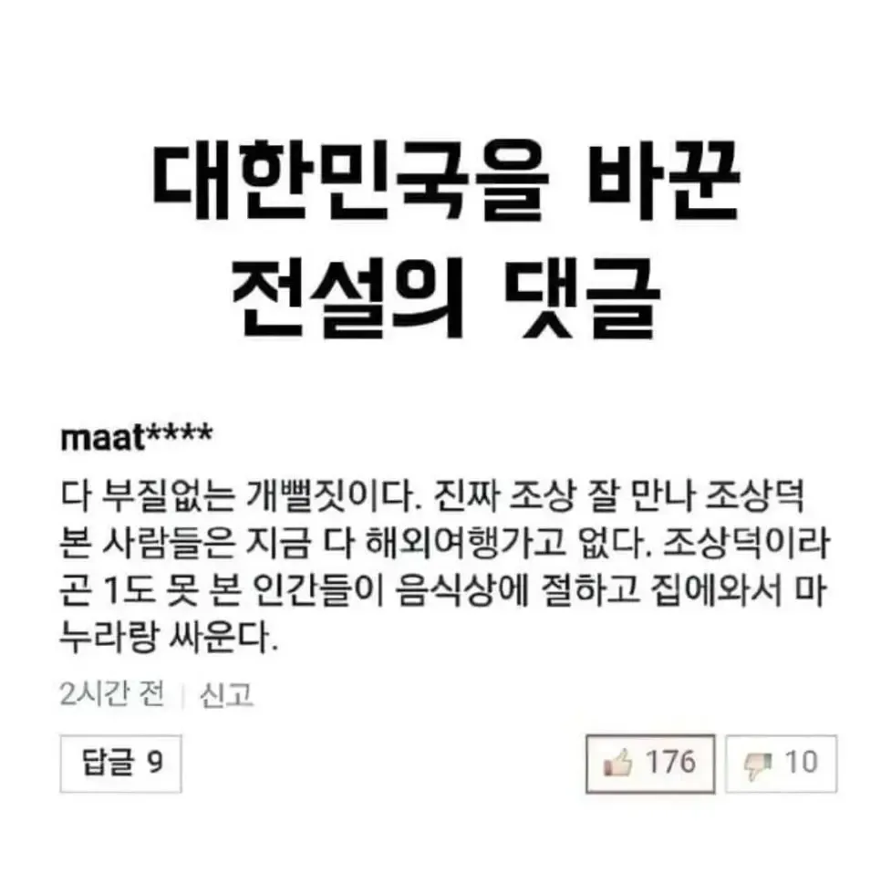

진짜 금수저는 번잡한거 피하려고 명절 말고 평일에 여행간다는데
그리고 상속받을 재산이 많을수록 가족행사 무시하기 어려워지고
놀랍게도 저댓글이 16년도인데 17년도 추석기간 해외여행객이 3배정도 폭증함..물론 역대급으로 긴 추석이긴 햇다만 댓글도 한 몫하지 않았을까
커뮤하는 애들은 커뮤 영향력을 너무 고평가해
저게 유두부인스타 같은곳까지 퍼지잖아
커뮤를 하면 하는대로 자기 부모님께 말하고 안 하면 안 하는대로 윗댓 처럼 유튭이나 인스타 보고 부모님께 말하는 거지. 그리고 부모님들은 다른 가족, 친구, 지인, 직장 동료 등에게 말하고.
그럼 입소문 나는 거 금방임.
무슨 70대 환자까지 저런 말 하면 끝났지 뭐ㅋㅋㅋ
커뮤니티가 진짜 세상이다. 눈을 뜨거라
다른 집은 모르겠는데 우리 집은 확실히 영향이 있었음
큰집이 매년 제사만 17개씩 지내면서 이래야 우리 집안이 잘된다는 소리하던 집이었는데
그걸로 이미 다른 형제 자매들은 다 싸우고 손절한 상태에서
우리 집만 그나마 '그래도 형제니까' 하면서 제사에 가주고 그랬었음
그러다가 저 댓글 나오고 한 1년 정도 지났을 때에 우리 엄마가 해외여행 한 번을 못가본다는 이야기를 했고
아빠는 그나마 명절 때에나 시간을 낼 수 있고 그 때도 3일 내내 큰집에서 제사만 지내야 한다 이런 말이 나왔음
그래서 내가 저 댓글 이야기 하면서 한동안 저런 말이 돌았다고 말했음
그러고 나서 몇 달 뒤에 별로 중요한 제사도 아닌데 그 날 차가 밀려서 30분 정도 늦게 도착했음
근데 큰엄마가 우리 엄마한테 ㅈㄴ ㅈㄹㅈㄹ을 해대서 그 날 우리 가족도 싸우고 손절했음
그 후로 명절 때에 시간 나면 해외여행 다니기 시작했음 ㅋㅋㅋㅋㅋ 그러다 코로나가 와서 멈췄다가
작년 추석에도 해외여행을 갔었음
근데 진짜 저 댓글 이후로 제사 안 지내는 사람들 늘고 코로나 때는 제사 문화가 아예 반토막 나버린거 같음.
우리뿐 아니라 친척네, 친구네, 회사거래처 등등 제사 때 안 모이고 걍 남자들만 몇명 모여서 간소하게 하거나 아예 없애버린 경우가 엄청 많더라.
저거랑 퐁퐁이론 영포티가
한국을 뒤흔든 밈이다
흡연충 사이코패스 밈도 더 퍼져야함
퐁퐁은 보슬아치때부터 이미 있었음
퐁퐁 이후로 내무부장관허락같은 자학개그 싹없어짐
우리집은 더 이상 제사 안지냄, 진짜 양반집은 밥,국,생선 등 간소하게 차려서, 절만하지
대부분 쌍놈들 집안이 마을사람들끼리 경쟁 붙어서, 부모에 대한 '효'랍시고
조선시대에도 없었던, 상다리 부러지게 명절상,제사상 차리고 며느리 개고생시킨 악습이었던거지
우리집도 처음엔 엄마가 엄청 반대 했음 음식은 자기가 하니까 너는 가만히 있어라 근데 몇번 안차리고 뭐 사다가 먹고 나가 먹고 하니까 엄청 편하거든 이게 모를 땐 반대 해도 편한맛 보면 바로 찬성하게 돼있더라
부모님들이 제사를 이어가려는 이유는 자식들이 부모님 집에 강제로 모이기때문이지 뺄수도없고
자식들 보려고 제사를 이어가려 하는게 맞는거임
제사, 명절을 이유로 강제로 가족이 한번에 모일 수 있는 이유가 되니까
차라리 명절, 제사땐 맛잇는 음식먹으러, 외식가자고 반드시 모인다고 약속하는게 부모님을 위한거지
Maat형님....
명절때 시골가면 친인척, 동네사람들 모여서 하하호호하면서 놀고먹는게 그냥 동네자체가 잔치분위기인데
이런게 조상잘만난게 아닐까싶음
코로나 영향이 크지. 코로나 거치면서 제사, 교회, 종교, 회식문화 , 음주문화 싹 다 나가리됨
코로나 이전만해도 1년에 회식 최소 10번은 했는데 지금은 회식 1년에 3번?? 심지어 술도 안마셔서 밥먹고 2차 없이 끝. 아무도 안감. 식당들 진짜 장사 안되겠더라
전에는 회식 안하면 큰일인줄 알았는데 코로나때 안해보니까 안해도 잘돌아간다는걸 느낌
회사는 돈아껴서 이득 직원들은 시간아껴서 이득 개이득임
그냥 악습을 전통이랍시고 포장하면서 하다가 빨간약 들이마신거지
저건 존나 십수년전 이야기고
요새 누가 부자들이 성수기 여름휴가나 명절에 해외가냐 ㅋㅋ
내가 본 부잣집 어르신들은 다 제사 차례 많이지냄.
그리고 또 보이는 차이점이 부잣집은 부모님모시고 3대끼리 해외여행가는거 못봄 ㅋㅋ 서민들이 부모님이랑 애들데리고 3대로 해외여행가더라 ㅋㅋㅋ
부자들은 부모따로 내가족 따로 다님.
3대가 모이는건 명절에나….
반대로 그런 현상이 발생함에 따라서 저런 댓글이 나타나는 것 아닐까?
이젠 이악물고 조상덕본사람들은 열심히 지낸다고 게거품무는 틀딱들이 기어나오더라ㅋㅋ 그러면서 들고오는게 대기업회장들ㅋㅋㅋ
고액연봉자나 잘나가는 사장들이 하는건 본적도없구만ㅋㅋ
예상대로 또 찐부자는 어쩌구 저쩌구 나옴...
맥락이 아니라 키워드 하나 물고 늘어지는 모습들..
걔들이 사회밑바닥 깔아주는거지ㅋㅋㅋ
금수저가 대기업회장밖에 없냐 고연봉자들 제사 안하고 잘만 나가더만
진짜 근본있는재벌들은 아직 제사지내지않나?
저댓글때문인지는 모르겟고 비슷한 인식들이 생기긴했음. 개인적으로는 동의못하는말. 조상덕 봐서 제사 명절 의무참여 분위기임 케바케인거지
커뮤근들갑레전드
그냥 문화라 생각해서 난 제사 할건데 우리 부모님, 와이프쪽 부모도 내가 할 마음이 있음
다만 제사는 내방식을 따라야함 음식은 내가 먹고싶은걸로 두세가지 올리고, 내가 해외 여행 가는경우 조상님이 찾아와서 머거야 함
제사 주도적으로 지내는 사람들은 최소 50대인데
왜 커뮤밈이 영향을 끼쳤을꺼라 생각하는거지
개인적인 경험 표본이 큰 의미는 없겠지만
내가 본 재벌, 부자들은 제사 오지게 챙기던데 ㅋㅋㅋ
영향력 있기는 무슨 우물안 개구리논리지 ㅋㅋ 내가 아는 금수저 집안도 오히려 조상 덕 잘봤기에 명절때 시골 내려가서 거의 집안 잔치 수준으로 하고 오히려 외국가봤자 의미없는 우리나라 한정 성수기 말고 축제나 행사 있는 그나라 성수기에 맞춰서 놀러다님
음식상에 절하고 마누라랑 싸운다가 존나 웃김 ㅋㅋㅋㅋ